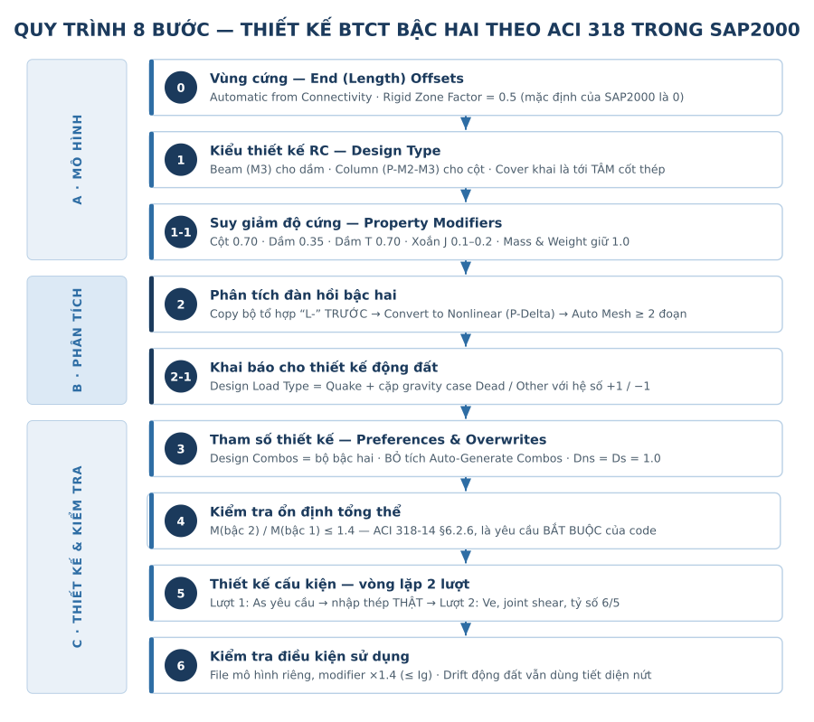
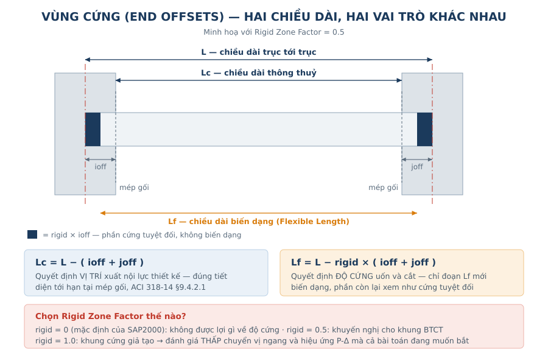
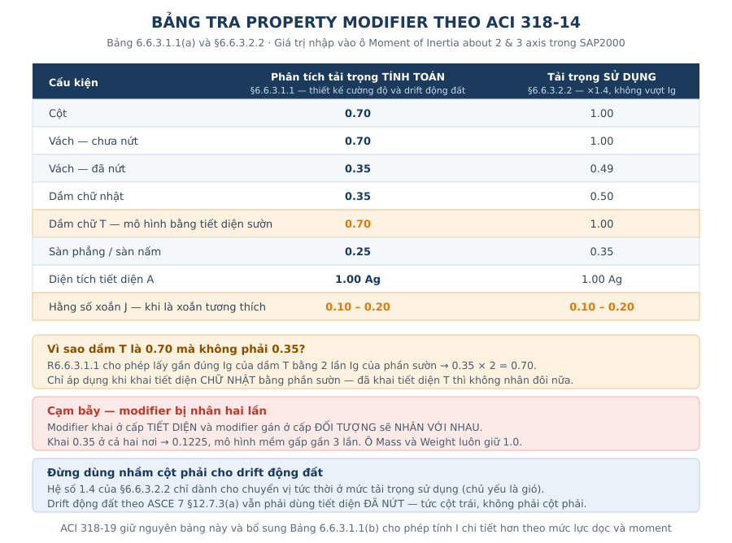
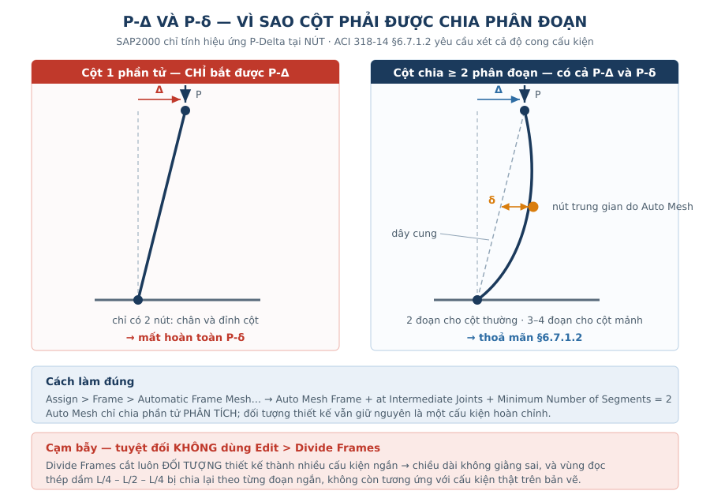
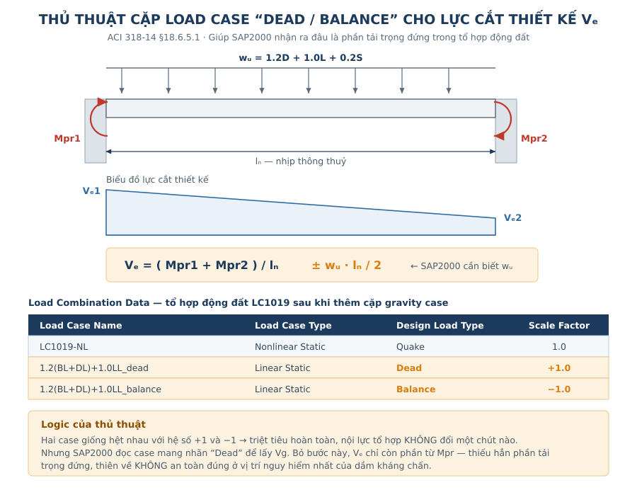

1. Vì sao chọn phân tích bậc hai thay vì hệ số khuếch đại moment?
ACI 318 mở ra ba con đường để xử lý hiệu ứng bậc hai:
| Đường | Điều khoản | Cách làm | Phù hợp với |
|---|---|---|---|
| 1 | §6.6.4 | Phân tích bậc nhất + khuếch đại moment δns, δs | Nhà khung đều tầng, hình học đơn giản |
| 2 | §6.7 | Phân tích đàn hồi bậc hai | Kết cấu công nghiệp, khung không đều tầng |
| 3 | §6.8 | Phân tích phi tuyến vật liệu | Đánh giá, cải tạo, nghiên cứu |
Với kết cấu nhà máy — khung đỡ thiết bị, sàn thao tác cục bộ, cao trình lệch nhau, cột dài không có dầm giằng, chân cột trên đài cọc — Đường 1 bị loại bỏ ngay từ định nghĩa. Chỉ số ổn định Q, tổng ΣPu, ΣPc và chiều dài lu trong §6.6.4.4.3 đều dựa trên khái niệm “một tầng” mà công trình đó hầu như không có.
Đường 2 chuyển gánh nặng sang mô hình. Đổi lại, kỹ sư phải tuân thủ bốn điều kiện:
- Độ cứng tiết diện phải giảm theo §6.6.3.1.1 (được viện dẫn lại tại §6.7.2.1.1);
- Phân tích bao gồm cả P-Δ (chuyển vị nút) và P-δ (độ cong trong lòng cấu kiện) — §6.7.1.2;
- Phần thiết kế phải đặt δns = δs = 1.0, nếu không hiệu ứng bậc hai bị tính hai lần;
- Mbậc 2 ≤ 1.4 × Mbậc 1 — §6.2.6.

2. Bước 0 — Khai báo vùng cứng (Rigid Zone / End Offsets)
Assign > Frame > End (Length) Offsets…Phần tử thanh trong SAP2000 nối các nút toán học, nhưng dầm và cột thật có bề rộng — vùng giao nhau bị chồng lấn hai lần nếu không khai báo offset.
- Lc = L − (ioff + joff) → chiều dài thông thuỷ. Quyết định vị trí xuất nội lực thiết kế, đúng với yêu cầu tiết diện tới hạn tại mép gối của ACI 318-14 §9.4.2.1.
- Lf = L − rigid × (ioff + joff) → chiều dài biến dạng. Quyết định độ cứng uốn và cắt của cấu kiện.
Rigid Zone Factorchạy từ 0 đến 1.0. Mặc định của SAP2000 là 0 — nghĩa là bạn được lợi về vị trí thiết kế nhưng không được lợi gì về độ cứng.

Khuyến nghị thực hành
- Chọn
Automatic from Connectivityđể SAP tự tính ioff/joff theo tiết diện thật. - Đặt rigid = 0.5 cho khung BTCT thông thường. Nút khung BTCT không tuyệt đối cứng: nó biến dạng cắt trong vùng joint.
- Không dùng rigid = 1.0. Nó làm khung cứng giả tạo → đánh giá thấp chuyển vị ngang → đánh giá thấp luôn hiệu ứng P-Δ.
3. Bước 1 — Chọn kiểu thiết kế RC (Design Type)
Define > Section Properties > Frame Sections > Concrete Reinforcement…| Kiểu | Ý nghĩa | Dùng cho |
|---|---|---|
Beam (M3 Design Only) | Chỉ thiết kế uốn quanh trục 3, bỏ qua lực dọc | Dầm chịu uốn thuần |
Column (P-M2-M3 Design) | Thiết kế theo mặt tương tác P-M2-M3 | Cột, cấu kiện có lực dọc đáng kể |
Ba sai sót dễ mắc phải
Concrete Covertrong hộp thoại là khoảng cách tới tâm cốt thép (cốt đai cho cột và cốt dọc cho dầm), không phải lớp bê tông bảo vệ.- Với cột, lần chạy đầu chọn
Reinforcement to be Designedđể SAP tính As yêu cầu. Lần chạy sau chuyển sangReinforcement to be Checkedvới bố trí thép thật (xem Bước 5). - Dầm collector, dầm giằng, dầm chuyển trong hệ chịu động đất có lực dọc lớn. Để kiểu
Beamlà SAP bỏ qua toàn bộ P → sai an toàn. Khai kiểuColumnhoặc kiểm tra lại bằng tay.
4. Bước 1-1 — Giảm độ cứng (Property Modifiers)
Set Modifiers… trong hộp thoại tiết diện, hoặc Assign > Frame > Property Modifiers.
Bảng tra nhanh — ACI 318-14 Bảng 6.6.3.1.1(a) và §6.6.3.2.2
| Cấu kiện | Phân tích tải trọng tính toán (§6.6.3.1.1) | Phân tích tải trọng sử dụng (§6.6.3.2.2 — nhân 1.4, không vượt Ig) |
|---|---|---|
| Cột | 0.70 Ig | 1.00 Ig |
| Vách chưa nứt | 0.70 Ig | 1.00 Ig |
| Vách đã nứt | 0.35 Ig | 0.49 Ig |
| Dầm chữ nhật | 0.35 Ig | 0.49 ≈ 0.50 Ig |
| Dầm chữ T (mô hình bằng tiết diện sườn) | 0.70 Ig,sườn | 1.00 Ig,sườn |
| Sàn phẳng / sàn nấm | 0.25 Ig | 0.35 Ig |
| Diện tích tiết diện A | 1.0 Ag | 1.0 Ag |
| Hằng số xoắn J | xem lưu ý bên dưới | xem lưu ý bên dưới |
Vì sao dầm T lại là 0.70 mà không phải 0.35?
R6.6.3.1.1 cho phép lấy gần đúng Ig của dầm T bằng 2 lần Ig của phần sườn, tức 2·(bwh³/12). Khi bạn khai tiết diện chữ nhật bw×h trong SAP2000, hệ số cần nhập là 0.35 × 2 = 0.70.
- Nếu bạn đã khai đúng tiết diện T (hoặc dầm làm việc liên hợp với sàn shell), không được nhân đôi lần nữa — cánh đã có sẵn trong Ig.
Hằng số xoắn J — điều mà tài liệu gốc bỏ qua
Để J = 1.0 nghĩa là bạn mô hình dầm với độ cứng xoắn chưa nứt. Trong khung BTCT thực, dầm biên nứt xoắn từ rất sớm và tự giải phóng moment xoắn. Giữ J = 1.0 sẽ hút một lượng xoắn ảo vào dầm biên, dẫn tới bố trí đai và thép dọc chống xoắn không cần thiết.
- Khuyến nghị: J modifier = 0.1 ÷ 0.2 khi xoắn là xoắn tương thích (compatibility torsion, ACI 318-14 §22.7.3).
- Giữ J = 1.0 khi xoắn là xoắn cân bằng (equilibrium torsion) — dầm console đỡ sàn một bên, dầm đỡ mái đua.

Hai lưu ý về modifier trong SAP2000
- Modifier khai ở cấp tiết diện và modifier gán ở cấp đối tượng sẽ nhân với nhau. Khai 0.35 ở cả hai nơi ra 0.1225 — mô hình mềm gấp 3 lần dự kiến. Chỉ dùng một nơi.
- Ô
MassvàWeight(nền xanh) luôn giữ 1.0. Giảm chúng là giảm luôn tải trọng bản thân.
5. Bước 2 — Thiết lập phân tích đàn hồi bậc hai
SAP2000 chỉ tính P-Delta trong Nonlinear Static Load Case. Mà bài toán phi tuyến không cộng tác dụng được. Hệ quả: mỗi tổ hợp tải trọng tính toán phải trở thành một load case riêng, với đúng hệ số tổ hợp của nó.
Trình tự bắt buộc — sai thứ tự là mất dữ liệu
- 1. Chọn tổ hợp thiết kế (Strength): tổ hợp lắp dựng, vận hành, thử tải theo spec dự án.
- 2. Sao chép toàn bộ tổ hợp thành bộ thứ hai, đặt tiền tố
L-(ví dụL-LC1001). Bộ này giữ nguyên bậc nhất, để so sánh ở Bước 4. - 3.
Define > Load Combinations > Convert Combos to Nonlinear Cases…→ SAP tạoLC1001-NLvà biếnLC1001thành tổ hợpLinear Addchỉ chứaLC1001-NLvới hệ số 1.0. - 4. Kiểm tra ngẫu nhiên vài case đã convert (
Define > Load Cases > Modify/Show) theo bảng dưới.
| Trường | Giá trị đúng |
|---|---|
Load Case Type / Analysis Type | Static / Nonlinear |
Geometric Nonlinearity | P-Delta — không chọn P-Delta plus Large Displacements (chậm, dễ phân kỳ, không cần cho khung nhà) |
Initial Conditions | Zero Initial Conditions |
| Load Pattern & Scale Factor | đúng bằng hệ số tổ hợp |
Results Saved | Final State Only (giảm dung lượng file rất nhiều khi có hơn 100 case) |
Chia nhỏ cấu kiện để bắt P-δ
Assign > Frame > Automatic Frame Mesh…
Auto Mesh Frame
at Intermediate Joints
Minimum Number of Segments = 2- P-Delta trong SAP2000 chỉ tính tại nút. Cột một phần tử = chỉ có P-Δ, không có P-δ → vi phạm §6.7.1.2.
- Dùng 2 phân đoạn cho cột thường, 3–4 phân đoạn cho cột mảnh (klu/r > 60) hoặc cột đỡ thiết bị nặng.
- Cho phép dùng
Automatic Frame Mesh. Auto mesh chỉ chia phần tử phân tích, đối tượng thiết kế vẫn nguyên vẹn.

Điểm xuất kết quả
Assign > Frame > Output Stations…
Minimum Number of Stations = 9
☑ At Intersections with Other Elements
☑ At Concentrated Load LocationsDầm cần nhiều station (nội lực lớn nhất nằm giữa nhịp). Cột chỉ cần hai đầu — có thể để 3–5 stations cho cột để giảm thời gian chạy.
6. Bước 2-1 — Load Case Type và Dead Load Case cho thiết kế động đất
Đây là bước tinh tế nhất và cũng bị bỏ sót nhiều nhất.
Sau khi convert, SAP2000 không còn biết tổ hợp nào chứa động đất, và cũng không biết đâu là phần tải trọng đứng. Hai thông tin này lại là điều kiện sống còn của Chương 18.
(a) Để SAP nhận diện tải trọng động đất
Load Case Data > Load Case Type > Design…
User Defined = Quake (cho mọi case phi tuyến có chứa động đất)Chỉ khi nhìn thấy nhãn Quake, SAP2000 mới kích hoạt các quy định của ACI 318-14 Chương 18: lực cắt thiết kế theo Mpr, kiểm tra cắt nút, tỷ số 6/5, giới hạn thép tối thiểu hai đầu dầm.
(b) Để SAP nhận diện tải trọng đứng — thủ thuật cặp Dead/Balance
ACI 318-14 §18.6.5.1 quy định lực cắt thiết kế của dầm:
Ve = (Mpr1 + Mpr2) / ln ± wu · ln / 2SAP2000 tính được phần Mpr, nhưng cần biết wu là bao nhiêu. Cách làm:
- 1. Tạo hai load case Linear Static giống hệt nhau, chứa đúng phần tải trọng đứng của tổ hợp động đất (ví dụ
1.2(BL+DL)+1.0LL). - 2. Đặt tên phân biệt:
…_deadvà…_other. - 3. Gán
Design Load Type: một case là Dead, case còn lại là Other. - 4. Thêm cả hai vào tổ hợp động đất với hệ số +1.0 và −1.0.

Logic của thủ thuật: hai case triệt tiêu nhau về mặt số học, nội lực tổ hợp không đổi một chút nào. Nhưng SAP2000 đọc được case mang nhãn Dead và dùng nó làm Vg khi dựng biểu đồ cắt theo Mpr.
- Hệ số tải trọng đứng phải khớp với chính tổ hợp đó:
1.2D + 1.0L + 0.2Scho tổ hợp ASCE 7-16 số 6,0.9Dcho tổ hợp số 7. - Nếu bỏ qua bước này, Ve chỉ có phần từ Mpr — thiếu hoàn toàn phần tải trọng đứng, thiên về không an toàn.
7. Bước 3 — Thiết lập tham số thiết kế
(a) Preferences
Design > Concrete Frame Design > View/Revise Preferences…| Mục | Giá trị | Ghi chú |
|---|---|---|
| Design Code | ACI 318-14 / ACI 318-19 | Xem mục 13 về khác biệt |
| Multi-Response Case Design | Envelopes | |
| Consider Minimum Eccentricity | Yes | Kích hoạt M2,min = Pu(15 + 0.03h) mm, §6.6.4.5.4 |
| Seismic Design Category | Theo spec dự án | Lấy từ ASCE 7, không đoán |
| Design System Rho (ρ), Sds | Theo spec | Chỉ dùng khi để SAP tự sinh tổ hợp — ta không dùng |
| Phi (Shear Seismic) | 0.60 | §21.2.4.1 |
| Phi (Joint Shear) | 0.85 | §21.2.4.3 |
| Utilization Factor Limit | 0.95 | Ngưỡng nội bộ, nên giữ ≤ 1.0 |
(b) Design Combinations
- Đưa vào danh sách bộ tổ hợp bậc hai (
LC1001,LC1002…), không phải bộL-. - Bỏ tích
Automatically Generate Code-Based Design Load Combinations. Nếu tích, SAP2000 tự sinh tổ hợp tuyến tính theo hệ số riêng của nó và toàn bộ công sức phân tích phi tuyến bị vô hiệu.
(c) Overwrites
| Mục | Giá trị | Lý do |
|---|---|---|
| Framing Type | Sway Special cho kết cấu theo Chương 18; Sway Ordinary cho trường hợp còn lại | Quyết định toàn bộ nhóm kiểm tra động đất |
| Effective Length Factor K | Program Determined | SAP lấy K = 1.0, đúng tinh thần phân tích bậc hai |
| NonSway Moment Factor Dns | 1.0 | P-δ đã có nhờ chia phân đoạn |
| Sway Moment Factor Ds | 1.0 | P-Δ đã có nhờ nonlinear case |
8. Bước 4 — Kiểm tra M<sub>bậc 2</sub> ≤ 1.4 M<sub>bậc 1</sub>
Đây không phải kiểm tra tuỳ chọn theo yêu cầu chủ đầu tư. ACI 318-14 §6.2.6 quy định: tổng moment kể cả hiệu ứng bậc hai trong cấu kiện chịu nén, dầm kiềm chế và các cấu kiện khác không được vượt quá 1.4 lần moment bậc nhất. Đây là ngưỡng chặn độ nhạy ổn định của toàn hệ.
Cách làm
- 1. Chạy phân tích (cả bộ
LCvà bộL-LC). - 2.
Display > Show Tables > Analysis Results > Element Forces – Frames. - 3.
Select Load Cases→ chọn lần lượt bộ bậc nhất và bộ bậc hai. - 4.
File > Export Current Table > To Excel, lập tỷ số M3NL/M3L và M2NL/M2L.
Đọc kết quả
- Tỷ số > 1.4 tại các cấu kiện có moment đáng kể → hệ kết cấu quá mềm. Phải tăng tiết diện, thêm vách hoặc thêm hệ giằng. Không có cách “chỉnh phần mềm” nào cứu được.
- Tỷ số > 1.4 nhưng moment tuyệt đối gần bằng 0 (ví dụ 1×10⁻⁵ so với 1×10⁻⁶ kN·m) → nhiễu số học, bỏ qua được. Lọc trong Excel bằng ngưỡng moment tối thiểu.
- Nếu phân tích phân kỳ (không hội tụ): kiểm tra bất ổn định trong
Modal Analysis(chu kỳ dài bất thường, dạng dao động cục bộ), kiểm tra cấu kiện chưa liên kết, và kiểm tra lại độ cứng hệ.
9. Bước 5 — Đọc kết quả và vòng lặp thiết kế hai lượt
(a) Xem trực tiếp trên mô hình 3D
Design > Concrete Frame Design > Display Design Info…| Hiển thị | Ý nghĩa |
|---|---|
| Longitudinal Reinforcing | Dầm: As trên/dưới cho ba đoạn 0–L/4, L/4–3L/4, 3L/4–L. Cột: As cho cả cấu kiện |
| Rebar Percentage | Hàm lượng thép dọc |
| Shear Reinforcing | Av/s — diện tích đai trên đơn vị chiều dài |
- Đổi đơn vị hiển thị sang
Kgf, cm, Cđể diện tích thép ra cm² — dễ đối chiếu với bản vẽ hơn nhiều so với m². - Hàm lượng thép cột nên giữ dưới 2%, dù ACI 318-14 §18.7.4.1 cho phép tới 6% (§10.6.1.1 cho phép tới 8% với cột thường).
- Lý do rất thực tế: còn dư chỗ để tăng thép khi tỷ số 6/5 không đạt, mà không phải đổi tiết diện cột.
- Đổi tiết diện cột kéo theo đổi thép dầm, đổi bố trí ống HVAC/piping quanh cột — một thay đổi nhỏ lan ra toàn bộ dự án.
- Trên 2.5–3% thì mật độ thép tại nút gây nhiều khó khăn cho thi công.
(b) Đọc báo cáo chi tiết (nháy đúp vào cấu kiện → Summary)
- Dầm: nhãn
Type: Sway Special, kích thước, φ, moment thiết kế, As yêu cầu và As,min, Av/s, Vp (lực cắt từ Mpr với fy nhân 1.25), phần xoắn. - Cột: capacity ratio, Δns/Δs (phải bằng 1.0 — kiểm tra lại ở đây!), K, L, cắt, Joint Shear, và (6/5) Beam/Column Capacity Ratio theo §18.7.3.2.
- Nhãn
(Sp)sau tên tổ hợp nghĩa là kết quả đã áp dụng hệ số đặc biệt của code, hoặc dựa trên khả năng chịu lực của cấu kiện lân cận — không phải nội lực phân tích thuần tuý.
(c) Vòng lặp hai lượt — bắt buộc với kết cấu kháng chấn
Lượt 1 cho ra As yêu cầu. Nhưng Ve và tỷ số 6/5 phải tính từ As thực tế bố trí, luôn lớn hơn yêu cầu. Nếu dừng ở lượt 1, Mpr bị đánh giá thấp → lực cắt thiết kế thấp → thiên về không an toàn, đúng ở đúng chỗ nguy hiểm nhất.
- Dầm: nhập As thật vào
Reinforcement Overrides for Ductile Beams(Top/Bottom × Left/Right). - Cột: nhập số thanh, đường kính, cự ly đai thật, rồi chuyển sang
Reinforcement to be Checked. - Chạy lại thiết kế. Bây giờ Vp, joint shear và tỷ số 6/5 mới là con số dùng được.
(d) Khi Joint Shear hoặc 6/5 hiện “N/A”
SAP2000 chỉ tính hai hạng mục này khi hội đủ sáu điều kiện:
- Station có nút dầm-cột (đỉnh cột);
- Khung là ductile moment frame;
- Cột phía trên là cột bê tông (nếu tồn tại);
- Mọi dầm quy tụ vào nút đều là dầm bê tông;
- Kết quả thiết kế cấu kiện liên kết đã có;
- Tổ hợp có chứa tải trọng động đất.
Thiếu một điều kiện là N/A. Thường gặp nhất: dầm thép gác vào cột BTCT, hoặc quên gán Quake ở Bước 2-1.
10. Bước 6 — Kiểm tra điều kiện sử dụng
- Dùng tổ hợp tải trọng sử dụng theo spec dự án, không dùng tổ hợp tính toán.
- Đổi property modifier sang cột giá trị service ở bảng mục 4 (§6.6.3.2.2: nhân 1.4 nhưng không vượt Ig).
- Vì SAP2000 không cho phép modifier thay đổi theo load case, thực tế phải tách thành hai file mô hình: một file cường độ, một file sử dụng. Đặt tên rõ ràng và ghi vào bìa tính toán, nếu không người kiểm tra sau sẽ không hiểu vì sao hai file khác nhau.
- Dầm phải thoả chiều cao tối thiểu Bảng 9.3.1.1: đơn giản ℓ/16, một đầu liên tục ℓ/18.5, hai đầu liên tục ℓ/21, console ℓ/8. Thoả bảng này thì được miễn tính võng chi tiết (§24.2, R24.2).
11. Bước 7 — Những lưu ý còn lại
Chu kỳ dao động để tính hệ số động đất: dùng chu kỳ tính từ độ cứng đã giảm. Kết cấu BTCT đã xuất hiện vùng nứt ngay khi tháo cốp pha (ASCE 7-10 §12.7.3 mục a, FEMA P-1051 §10.3.1). Nhớ vẫn phải khống chế bằng T ≤ CuTa theo ASCE 7.
Kiểm tra lại kiểu load pattern / load case: Dead → Dead, Live → Live, Snow → Snow, động đất → Quake. Đây là dữ liệu SAP2000 dùng để dựng tổ hợp thiết kế cắt theo Chương 18. Sai kiểu ở một load pattern là sai toàn bộ nhánh kháng chấn — mà không có cảnh báo nào.
Phổ phản ứng (Response Spectrum) không chạy được bên trong nonlinear static case. Nếu dự án dùng RSA thay vì lực tĩnh tương đương, cách xử lý là: tạo một case P-Delta chỉ chứa tải trọng đứng, rồi khai case phổ phản ứng với Stiffness at End of Nonlinear Case cho case đó. Khi ấy P-Δ được xét ở mức độ cứng đã bị tải trọng đứng làm giảm.
Tải trọng dài hạn (creep): §6.7.1.2 yêu cầu phân tích bậc hai phải xét cả duration of loads, shrinkage and creep. Với tổ hợp mà tải trọng đứng dài hạn chiếm ưu thế, độ cứng nên chia thêm cho (1 + βdns) theo tinh thần §6.6.4.4.4. Đây là điểm gần như không tài liệu hướng dẫn phần mềm nào nhắc tới, nhưng nó là điều khoản của code.
Thời gian chạy: 120 tổ hợp phi tuyến là 120 lần giải hệ. Ba cách rút ngắn: Results Saved = Final State Only, giảm số output station cho cột, và loại bỏ các tổ hợp chắc chắn không khống chế trước khi convert.
Những gì SAP2000 KHÔNG làm cho bạn: chiều dài neo và nối chồng, vị trí cắt thép, cấu tạo đai vùng dẻo (§18.6.4), cốt đai ngang trong nút (§18.8.4), cấu tạo chống xoắn, và kiểm tra thi công được. Kết quả SAP2000 là diện tích thép yêu cầu, không phải bản vẽ.
12. Cẩm nang cho kỹ sư kết cấu
- End offset
Automatic from Connectivity, rigid factor = 0.5 - Design Type đúng: dầm = Beam, cột = Column; cover là tới tâm thép
- Modifier 0.70 / 0.35 / 0.70(T) — chỉ khai một cấp, Mass & Weight = 1.0
- Modifier xoắn J đã cân nhắc (0.1–0.2 cho xoắn tương thích)
- Đã copy bộ tổ hợp
L-trước khi Convert to Nonlinear - Nonlinear case: P-Delta, Zero Initial Conditions, hệ số tổ hợp đúng
Automatic Frame Mesh≥ 2 phân đoạn (không dùng Divide Frames)- Output stations ≥ 9 cho dầm, có tại giao điểm & tải tập trung
- Case động đất gán
Design Load Type = Quake - Cặp gravity case
Dead/Othervới hệ số +1 / −1 đã thêm vào tổ hợp động đất - Design Combos = bộ bậc hai; bỏ tích Auto-Generate Code-Based Combos
- Overwrites: Framing Type đúng, Dns = Ds = 1.0
- Mbậc 2/Mbậc 1 ≤ 1.4 (đã lọc nhiễu moment ≈ 0)
- Hàm lượng thép cột < 2%
- Đã nhập thép thực tế và chạy lượt 2 để lấy Ve, joint shear, tỷ số 6/5
- Joint shear / 6/5 không còn “N/A” ở các nút cần kiểm tra
- File kiểm tra sử dụng dùng modifier 1.0 / 0.5; drift động đất vẫn dùng 0.70 / 0.35
- Chu kỳ dùng cho hệ số động đất lấy từ mô hình độ cứng đã giảm
Công cụ tính toán hỗ trợ
13. Ghi chú về phiên bản ACI 318
- ACI 318-19 giữ nguyên Bảng 6.6.3.1.1(a) và toàn bộ logic Chương 6 nói trên, đồng thời bổ sung Bảng 6.6.3.1.1(b) cho phép tính I chi tiết hơn theo mức lực dọc và moment.
- Khác biệt lớn nhất của 318-19 nằm ở khả năng chịu cắt của bê tông Vc (§22.5.5.1): xuất hiện hệ số hiệu ứng kích thước λs và hàm lượng thép dọc ρw. Kết quả Av/s cho dầm sẽ khác so với 318-14, đặc biệt với dầm chiều cao lớn và ρw thấp.
- Nếu spec dự án viện dẫn 318-14, hãy giữ 318-14 trong Preferences. Đừng “nâng cấp” code trong phần mềm mà không có chấp thuận bằng văn bản — hai bộ kết quả sẽ không đối chiếu được với nhau ở giai đoạn kiểm tra.
Bài viết thuộc series “Hướng dẫn thiết kế kết cấu Công trình Công nghiệp” — Roberto Structural. Nội dung mang tính hướng dẫn kỹ thuật; kỹ sư chịu trách nhiệm kiểm tra và hiệu chỉnh theo điều kiện cụ thể của từng dự án và yêu cầu của tiêu chuẩn áp dụng.